Qualtrics FAQ
Login & Account Status
Question 01
I cannot login, I received an error message stating that my password is incorrect. I tried to request a password reset but it does not work. How do I access my account?
Another login method than Vrije Universiteit SSO was used. Go to the login page, choose: Vrije Universiteit SSO and log in with your VU account credentials (email address and password). See also Creating and Accessing User Accounts
Question 02
I cannot login, I received an error message “account is disabled”. How do I access my account?
Security settings are in place which set an user account to Status: Disabled when a certain inactivity threshold has been reached. A disabled account status does not affect its data. Please contact the RDM Support Desk at rdm@vu.nl to have your accounts re-enabled.
Question 03
I think I need an account upgrade, how should I do that?
Licensed functionality on the VU’s Central Brand is made equally available to all users. Users should not engage in account upgrades with Qualtrics. This would be deemed an agreement between the user and Qualtrics directly, and falls outside VU’s licence and contract management responsibilities. (Very) high costs will likely be involved in account upgrade requests.
Question 04
A survey template was shared with me by my course supervisor, but I am missing features and functionalities. If I want to use these (additional) functions, I need to upgrade my account, how I can do that?
A Qualtrics free account is likely been used instead of VU’s Central Brand account. Everyone can create a free account on the Qualtrics main site (The Qualtrics Brand). These free accounts have limited functionality and validity (See also Question 03). Verify the URL of the account you are logged in to. Proceed to create an account on VU’s Central Brand (See also Question 01)
Free Account Login Page. URL will look like this: 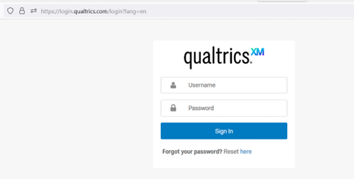
Question 05
I was using a Qualtrics free account and I have now created an account on VU’s Central Brand. How can I transfer any data I had on my free account to my VU account?
Qualtrics free accounts do not support the automated transfer of data between brands. The account owner will have to execute a Manual Move. This means downloading data from the free account and uploading this data onto the branded account. The steps to process a Manual Move are outlined in this article: User Moves – Manual Move.
Advanced Features
Question 06
Does VU’s Qualtrics licence supports Conjoint Analysis?
Unfortunately, the current Qualtrics subscription does not support (templates) for conjoint surveys/projects (and analysis).
However, there are a number of advanced features available on vuamsterdam.eu.qualtrics.com, which you may be able to use to reproduce a desired setup.
Please refer to: Embedded Data, which includes options as branching, display logic and piped text. Standard Elements, Embedded Data
API Support, which can be used on top of embedded data. API Integration
JavaScript. A JavaScript Editor add-on is also available on the Central Brand. Question Options, Add Javascript
Getting Started with Conjoint, a reference KB article as it might help to elaborate your own survey design within the current brand’s limitations.
Getting Started with Conjoint Projects
Collaboration - Getting Started
Question 07
What is Collaboration?
Collaboration features allow you to give other Qualtrics users access to your surveys when they log into their accounts. That way, you can work on the same project without giving out your account information. You can even choose to restrict what type of access other users have to your project.
Question 08
What is the main (technical) consideration regarding Collaboration via Qualtrics?
One should be aware that Qualtrics may offer different experiences depending on which brand type one is sharing from or been invited to join in using Collaboration features. Qualtrics recognizes three main brand types: Free Brand, Named Brand non-SSO and Named Brand SSO. VU’s Central Brand is a Named Brand SSO.
Question 09
What are the basic steps to invite someone to collaborate on a project?
Go to your Projects page and click on settings (…) of the project you want to share. Choose Collaborate.
Project Page View: 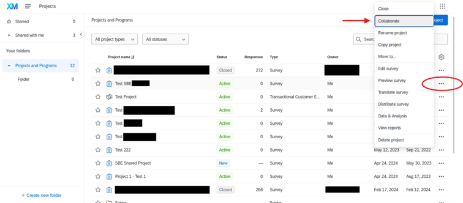
When collaborating within your organisation, you can look up the person you want to invite via the lookup field. Just start typing the name or email address of the user you want to find. Select the appropriate user.
Lookup field in Collaboration: 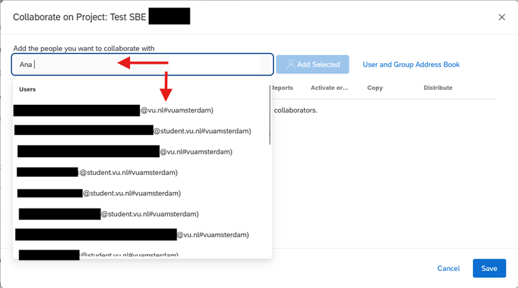
If you are inviting someone from outside your organisation, you should type in their email address. Click Add Selected and then Save. Collaboration settings, adding invitation and access rights: 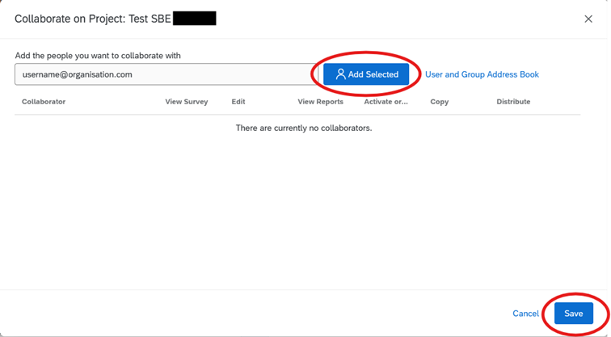
Collaboration - Advanced Settings
Question 10
How should I use Collaboration on VU’s Central Brand (Named Brand SSO)?
Each Qualtrics Brand is seen as a separate Organisation. When sharing surveys between brands, you will be collaborating between Organisations. You will likely also be sharing surveys between different brand types.
Please see Annex I: Collaboration Between Different Brand Types for a summary of steps to share and access surveys through Collaboration.
Extended information is also available on Collaborating with SSO Users and Accessing Shared Surveys if you would like to know more about Collaboration between different brand types.
Question 11
What access rights are available through Collaboration and can I specify what level of access is granted to individual Collaborators?
Yes, individual user permission are configurable when using Collaboration features. Please refer to Collaboration Permissions. Please be aware that by default all rights are granted when collaborating.
Access rights can be set for Viewing, Editing, View Reports, Activation, Copying and Distributing: 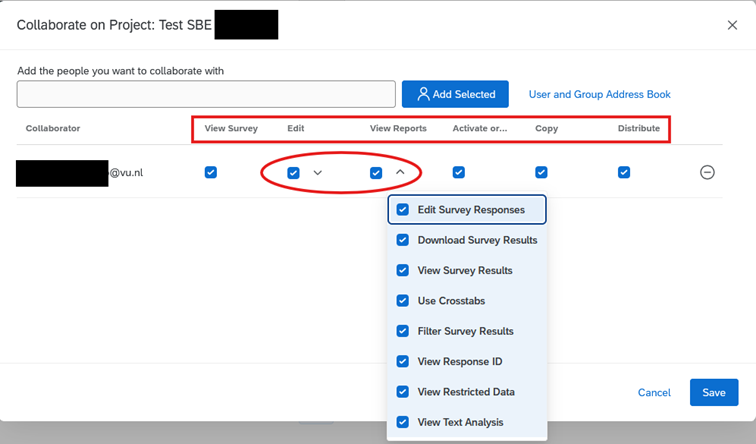
Annex I: Collaboration Between Different Brand Types
Main Knowledge Base item, Collaborating on Survey Projects
Step 1
If you are collaborating with someone through a SSO brand from outside of your organisation, then you may use any email address that collaborator(s) has/have access to. They will receive a secure collaboration code, log in to the Qualtrics account of their choice, and enter the code.
Step 2
Ignoring links in the invitation. When someone invites you to collaborate on a survey, you will receive this invite:
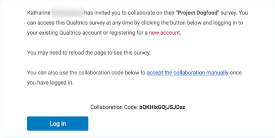
Step 3
Do not click on “new account”. Even if you do not have an account through your organisation yet, do not use this link. Do not click on Log In as this will redirect you to the inviter’s Qualtrics Brand login page. If you still need to create a new account, go to the special URL your organisation has set up for Qualtrics.
Step 4
To access the survey you have been invited to collaborate on, log into your Qualtrics account as you normally would. Then follow the steps in Accessing Shared Surveys to gain access to your survey.
Step 5
Accessing Shared Surveys: Once users have been invited to collaborate on a project, the collaborators receive an email notifying them, and they will be able to see it listed in their Shared with me folder the next time they log in.
Step 6
To Access This Folder > Navigate to the Projects page. 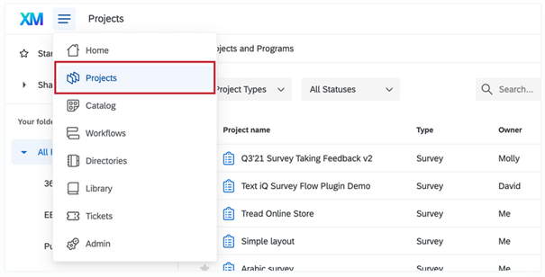
Step 7
Select Shared with Me.
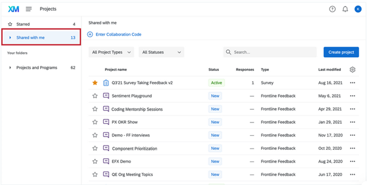
Step 8
Enter collaboration code.
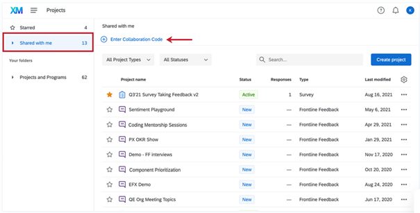
Step 9
Accept Survey Collaboration by clicking Submit
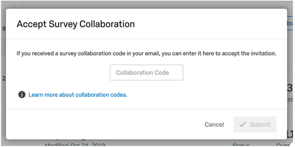
Qtip and Last Considerations 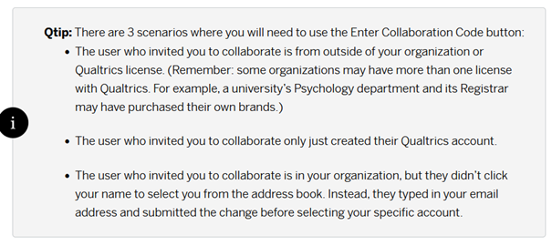